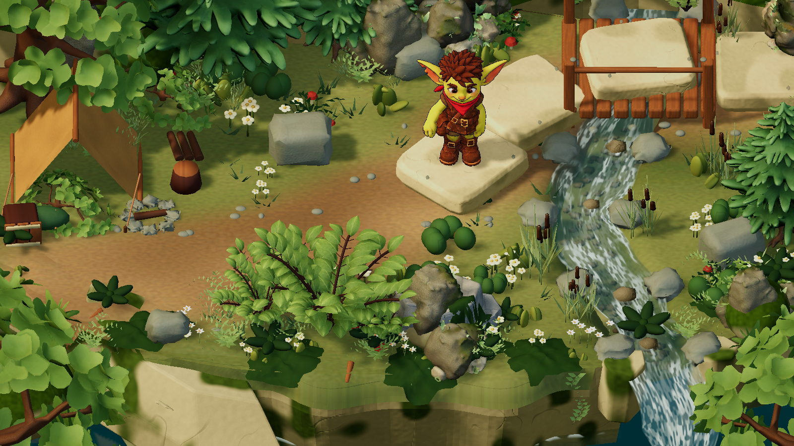

Техдирекция • архитектура • шейдеры • Unity 6.6
Объёмная диорама с мягкой стилизацией
Выбран сдержанный soft-toon для листвы, тёплый боковой свет и прохладное заполнение теней. Камни, герои и вода сохраняют непрерывное освещение. Настройки света и материалы уже подключены к игровому FirstTrail8.
Исходный игровой уровеньВнедрённый свет и материалы
Одинаковые камера, момент ветра и геометрия. Кадры отрисованы Unity, без дорисовки. Это художественный ракурс; игровые снимки с HUD находятся ниже.
Что изменилось
- Листва теперь получает дополнительный свет в Forward/Forward+, включая заполняющий источник. Сохранены текстуры, цвет в тенях, просвечивание и слабый широкий блик.
- Мягкое тональное формирование — 20%, без жёстких полос. Это не сплошной плоский cel shading.
- Солнце направлено сбоку; сила теней 0.8. SSAO уменьшен с 0.70 до 0.38, радиус — с 0.16 до 0.12.
- Desktop: две каскадные области теней вместо четырёх, дистанция 38 вместо 60, мягкие тени Medium. Камера удалена на 25 единиц, поэтому слишком короткая дистанция теней здесь недопустима.
- Единый владелец освещения восстанавливает ambient, fog и directional light при выходе с уровня. Сценарий gameplay больше не очищает lightmaps из художественного компонента.
Почему без общей чёрной обводки
Cel shading меняет светотень, а outline рисует контур — это независимые эффекты. Проверили тонкую обводку только Тиша. На текущей модели она подчёркивает внутренние швы волос и одежды, поэтому в основной уровень её не включили.

Эксперимент: контур 0.7 пикселя. Этот режим оставлен для сравнения, не включён в gameplay.
Следующий уровень качества ассетов
Отдельный вариант с округлым текстурированным кустом и уменьшенной плотностью травинок. Геометрия этого образца пока не размножалась по всему уровню.Для приближения к референсу ещё нужны крупные согласованные массы растительности, фактура земли и камней и более локальная пена. Освещение не заменяет работу с формой и текстурами. Тяжёлый куст из прошлого этапа остаётся образцом ближнего плана; массовому использованию должны предшествовать LOD и замер производительности.
Проверки и исходники
12 уникальных проверок пройдены. Кампания — все шесть уровней. Восстановление света проверено при обоих порядках удаления компонентов. Первоначальное строгое сравнение SH исправлено на сравнение сохранённых native-коэффициентов с допуском 0.00001; повторная проверка прошла.
Параметры и проверки · Первый прогон тестов · Повторная проверка освещения · Игровой уровень 1 с интерфейсом
Web-сборка и измерение FPS на целевом устройстве в этом проходе не выполнялись. Мобильный pipeline сохраняет свои ограничения качества теней. Не следует считать редакторское сравнение подтверждением мобильной производительности.